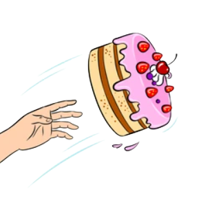

Come sono dimagrito
Ero rimasto solo, sovrappeso e sul punto di laurearmi (prendendo una laurea sfortunatamente ritenuta poco utile in Italia). Forse è stato proprio quello stravolgimento, quel perdere la mia "comfort zone" che mi ha spinto a provare, poiché non avevo più nulla. Molto banalmente ho iniziato con due cose: dieta e palestra. Perdere più di 30 kg era un'impresa titanica, e dubitavo ci sarei riuscito. Ma dovevo provare. Ho, prima di tutto, stravolto le mie abitudini alimentari. Tre pasti senza eccezioni, colazione pranzo e cena. Biscotti per colazione, carne, verdura, pesce e frutta per pranzo, stessa cosa per cena, in piccole porzioni. Ho smesso di concedermi spuntini e dolci fuori orario, e soltanto un giorno a settimana mi sono concesso pasti liberi (e massimo uno o due dolci).  In palestra mi sono concentrato sul cardio (tapis roulant, cyclette) e un po' di muscoli. Tuttavia si trattava dell'inizio della pandemia, quindi ben presto la palestra chiuse e mi ritrovai a dovermi inventare come fare ginnastica. Come ho provveduto?
- - Ho iniziato a camminare (circa 10.000 passi al giorno, che poi sono diventati 20.000 - sì, in pieno
lockdown)
- Ho fatto molto salto della corda. Ho iniziato da pochi minuti, e sono arrivato a circa 30.
- Ho complementato il tutto facendo esercizi come addominali, flessioni e così via.

Ho notato di essere diventato più deciso, più risoluto nei miei modi di fare. Inoltre, l'ansia sociale ha iniziato a ridursi.